Dr Victoria Clarke
Associate Professor in Qualitative and Critical Psychology
UWE Bristol
Walking, Lived Experience, and
International Urban Knowledge


Full abstracts and programme details will be published later.
Associate Professor in Qualitative and Critical Psychology
UWE Bristol
Director, Campaign for Inclusive Cities; Associate Professor
Publica / UCL Urban Lab
Architect and Director
Collective Architecture
Professor of Sociology
University of Barcelona
Professor of Sociology; Urban Ethnographer
London School of Economics (LSE)
ESRC Postdoctoral Fellow, International Development
London School of Economics (LSE)
Senior Lecturer, Geography, Politics and Sociology
Newcastle University
Senior Lecturer, Architecture and Built Environment
Northumbria University
Senior Lecturer in Planning
Institution to be announced
Urban Planner, Activist and Director
Col·lectiu Punt 6
Urban Planner and Policy Advisor
Royal Town Planning Institute (RTPI)
Architect, Spatial Practitioner and Co-Director
Black Females in Architecture
Associate Professor, Design Arts and Creative Industries
Northumbria University
Technical Director, Office of the CTO
Associate Dean, School of Art and Media
University of Brighton
PhD Researcher
Bauhaus University Weimar
Speaker list based on the current conference proposal. Final participation, dates and venue will be confirmed before public launch.
From feminist research methods and everyday urban experience to planning decisions and digital futures.
This session critically examines participatory and feminist methodologies as transformative tools for capturing situated knowledge and challenging dominant masculinist paradigms in urban planning and feminist ethnographer research. The primary purpose is to showcase innovative approaches including gendered walks, feminist GIS, participatory mapping, and mixed-method strategies that centre the lived experiences of women and marginalised communities in understanding urban space. The session will explore how these methods not only reveal patterns of exclusion, care work, and spatial inequality invisible to traditional planning approaches, but also serve as mechanisms for community empowerment and participatory governance.
Key questions include:
Through presentations of empirical research, methodological reflections, and case studies from diverse global contexts, this session aims to advance the theoretical and practical toolkit available to scholars and practitioners committed to gender-transformative urban development, while fostering critical dialogue about the politics of knowledge production in urban research.
Drawing on intersectional feminist frameworks, the session examines how compounded forms of inequality are produced and reproduced through urban infrastructures, mobilities, safety regimes, and environmental risk. By foregrounding lived experience as a critical source of urban knowledge, the session highlights methodological approaches that move beyond universal user models to capture differentiated needs, vulnerabilities, and forms of agency.
Key questions include:
Bringing together scholarship on care and mobility, fear and safety in public space, and climate injustice, the session demonstrates why gender-inclusive urban research and practice must be grounded in intersectional, context-sensitive, and justice-oriented analysis.
This session focuses on translating gender-inclusive and intersectional research into urban policy, planning, and practice. It examines the challenges, opportunities, and tensions involved in embedding feminist approaches within formal planning institutions, governance frameworks, and urban design processes. Drawing on gender mainstreaming frameworks, participatory governance models, and tactical urbanism (Doan, 2015), the session highlights how urban research can meaningfully inform policy-making, community-led interventions, and co-creative planning processes.
Key questions include:
This session helps to shape urban interventions that respond to differentiated needs, lived experience, and social justice goals. It seeks to interrogate the gap between academic knowledge and practical implementation, exploring the structural, institutional, and political barriers that influence how gender-sensitive insights are incorporated into urban planning and governance.
This session highlights how technology can support equitable urban planning, decision-making, and citizen engagement, while critically addressing ethical, privacy, and accessibility challenges. The session bridges feminist and intersectional urban theory with digital innovation and applied planning, offering a forward-looking perspective on how cities of the future can be inclusive, participatory, and socially just.
Key questions include:
The discussion of this session emphasises the importance of critical, intersectional approaches to ensure that technological interventions not only enhance efficiency and innovation but also advance social justice, inclusivity, and equity in urban life in the near future.
Four thematic sessions will connect critical scholarship with practical challenges and opportunities. A detailed timetable, venue and registration details will be published when confirmed.
The conference will bring together academic research, policy and professional practice, with opportunities for exchange across disciplines and career stages.
Two-day conference.
Technology and Innovation Centre, Glasgow.
Further submission and registration details will be announced.
School of Architecture and Built Environment, Northumbria University.
Registration has not yet opened. For enquiries, speaker updates and opportunities to contribute, get in touch with the conference organiser.
CONTACT THE ORGANISER